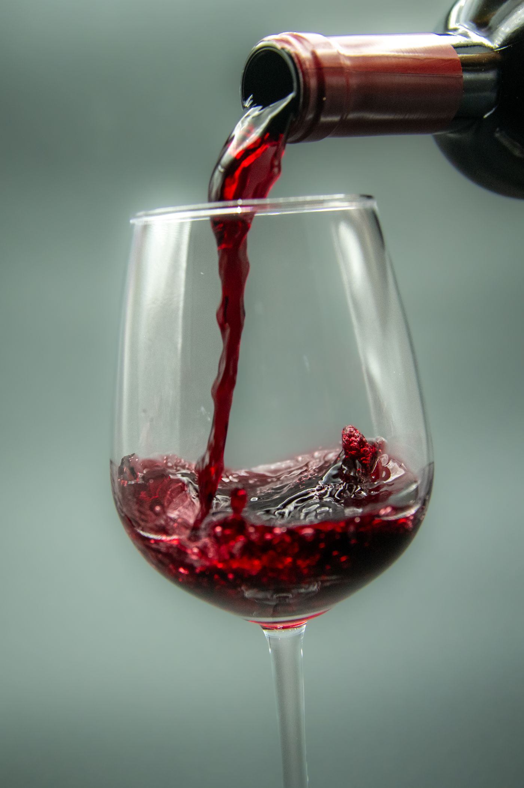

The Keeper · p. 2 of the book
The keeper of the book
Elena Aguirre, 47. Eighteen harvests in Rioja cellars; the last nine directing this one. Diploma in Wines (WSET, 2011), taken at night school while working the cellar floor by day.
How I got the keys
I came to Haro at nineteen to pick grapes for one harvest and stayed to wash barrels for the winter. The old director, Tomás Aldama, kept the cellar the way a lighthouse is kept — by routine, in writing, without drama — and he let me carry the book before he let me carry a case. When he retired in 2017 the family asked who should keep it. He had already written my name in the front, in pencil, two years earlier. I have kept it in ink since.
The work is mostly not tasting. It is turning bottles a quarter-turn, checking corks and capsules, watching a thermometer I trust more than the thermostat, and writing down what the cellar actually did this month. The tasting is the short part. The bookkeeping is the job.
The opinion I am known for
People cellar wine for three reasons: to drink it at its best, to give it away at its most impressive, and to watch it appreciate. The first two are cellars. The third is a vault with better lighting, and it produces the saddest sentence in wine: we never got around to opening it. Everything in my book is priced, windowed and argued for on the assumption that somebody, in a stated year, pulls the cork.

How a window is judged
Every bin in the book is tasted twice a year, in March and in September, from the same glass, at cellar temperature, with the previous note open beside me. A window is set from three things: the tannin (is it still gripping, or has it folded into the wine?), the fruit (fresh, dried, or gone?), and the finish (does it end longer than it did last time?).
Two rules keep the book honest. A window moves only on the evidence of two tastings in a row — one strange bottle never rewrites a bin. And a bin is never extended because stock remains. If the wine says it is finished while cases are still in the rack, the cases are written down, and I sign the loss in the book where the family can see it. That has happened four times in nine years. It is the most important page I keep.
Storage, stated plainly
More wine is ruined by advice than by cellars. What actually matters, in order:
- Stability over perfection. A steady 14°C keeps wine for decades. A perfect 12°C that swings to 19° every summer cooks it slowly. If you can hold one temperature all year, you have a cellar; the number matters less than the stillness.
- Darkness. Light strikes wine through green glass more slowly than clear, but it strikes. A cupboard beats a rack in a bright room.
- Humidity around 70%. It keeps corks from shrinking. Much drier and the cork lets air creep; much wetter and you grow mould on labels, which harms nothing but resale pride.
- Stillness. Bottles on a wall that shakes with a washing machine age faster and throw sediment into suspension. Move the machine or move the wine.
- The fridge is for chilling, not keeping. Too cold, too dry, and it vibrates. Three weeks, fine. Three years, no.
That is the whole of it. Anyone who sells you more apparatus than a thermometer and a dark, steady room is selling apparatus.
Old bottles: provenance & ullage
For any bottle older than fifteen years, the book records where it has been and how full it is. The fill level — the ullage — is read against the neck: into the neck is excellent at any age; base of neck is normal and honest for twenty years; mid-shoulder on a thirty-year-old is a price conversation held in writing before money moves, never a surprise at the table. Library bottles from Bin 26 were graded this way, bottle by bottle, and the grade went on the allocation letter. A low fill is not a scandal. An unmentioned one is.
Decanting, without theatre
A young reserva gets air because its tannin needs it: an hour in a decanter, two for the 2019 in a cold year. An old bottle stands upright for a day so the sediment falls, then is poured once, gently, off its sediment into glasses — not decanted to death in a wide bowl. An old wine meets air the way an old friend meets news: briefly, and sitting down. If a bottle smells wrong, it goes back to the estate and is replaced or refunded; that is written into every allocation letter, and it has been used eleven times in nine years.